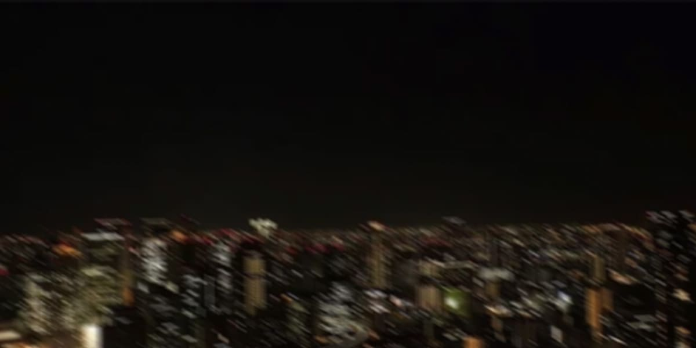

命からがら、天使は堕ちる
ネオンシティの中心には一つの大きな塔があった。その名は『太陽の塔』。この街のシンボルである。
全高600m。上部には菱形のような部位があり、そのさらに上には球体が乗っている。その球体には白く光る棘が生えており、その形状が太陽のようだと言われることからこの名がついた。
この塔が建てられたのは裂目事変発生より遥か昔であり、ヤミの存在を知らなかったその時代において天使対策は必要がなかった。天使誕生後も、この塔には一切の手が加えられていない。
この塔の光源は上部の光る棘のみ。月の光も街のネオンライトも届かない。
かくして条件は揃ってしまった。
そして世界の裏は顔を出す。

2061/06/06
シンナンの中心地、光南区。家路を急ぐ群衆で膨れ上がった退勤時間は、彼女にとって苦痛以外の何物でもなかった。西辛辛は、あえて遠回りになる帰路を選ぶ。小柄な女というだけで、雑踏では無遠慮に肩をぶつけられる。中には明らかな悪意や、卑屈な下心を乗せて身体を寄せてくる輩もいる。その粘りつくような思考が、吐き気がするほどに不快だった。
お気に入りは太陽の塔の直下だ。昼間は観光客が群がるその場所も、大通りに人が吸い寄せられるこの時間帯だけは、凪いだように誰もいなくなる。
辛辛は立ち止まって塔を見上げた。滅多に太陽が昇ることのないこの街のシンボルが太陽だなんて、皮肉を通り越して滑稽ですらある。
星ひとつ見えない漆黒の空で、独り輝く鉄の太陽。
ふと、支柱に止まっていた数羽の鴉が一斉に羽ばたいた。何かに怯え、逃げ出すような不自然な動き。
違和感に気づいた時には全てが手遅れだった。太陽の塔の頂から、巨大な影が彼女目掛けて真っ直ぐに墜落してきたのだ。
反射的に身を投げ出したが間に合わなかった。背中を鋭く抉る衝撃。直後、背後で鼓膜を震わせるほど鈍い衝突音が響き渡った。
アスファルトに倒れ込んだ辛辛は恐る恐る振り返る。そこにいたのは身体の一部が黒い液体へと溶け出し、のたうつ男の姿だった。
600mの高空から墜落して、なお起き上がろうとする生命力。普通なら肉塊になっていてもおかしくない。だが、この男に普通を求めることが間違いなのだと本能が告げていた。
人の身体に流れるはずのない、彼から飛び散った黒い血液。そして何より、その背から生えた不完全な黒い片翼。
男は溶けかかった腕で必死に地面を掻き、頭部をアスファルトに擦り付けていた。
──天使だ。
これは、天使なのだ。黒い鉄の太陽から産み落とされ、地上へと堕ちてきた異形のモノ。人間ではない。
その事実を突きつけられた瞬間、辛辛の心の底から場違いな安堵が漏れた。
辛辛は立ち上がり、コートを脱いで自身の背中を確認した。人工皮膚の白い肌は無惨に剥がれ、その下から無機質な金属の躯体が露出している。幸いなことにワイシャツは裂けておらず、内部機構を晒さずに済んだ。
もし私がサイボーグへの換装という高価な投資をしていなければ、今頃は修復不可能な傷を負っていたはずだ。
気がつけば、天使の男は足掻くのをやめていた。代わりに溶け崩れた身体をゆっくりと再構築し始める。グチャリという粘り気のある音が、静まり返った塔の下に響き渡る。
やがて黒い液体のうねりは収まり、男は完全に元の姿を取り戻した。
ふらふらと、生まれたての獣のように頼りない足取りで立ち上がる。背中から生えた片翼は彼のくるぶしに届くほど長く、不吉なほどに美しい。たった一枚の翼であっても、それは見る者を圧倒する神聖さを放っていた。
辛辛はその姿をじっと見つめる。それは彼女の、どうしようもない性だった。己が身体に高価な人工皮膚と金属を纏わせ、執拗に美しさを追求してきたが故に、他人の造形美に対しても、つい観察者の視線を向けてしまう。そして厄介なことに、彼女自身はその執着に無自覚だった。
天使という存在に加齢の概念があるのかは不明だが、この男は酷く若く見えた。体格こそ成人男性のそれだが、その貌には、まだ削ぎ落とされる前の幼さが残っている。
──可愛い顔。
そんな場違いな感想を抱いた。
天使はしばらくの間辛辛を不思議そうに見つめ返していたが、やがて興味を失ったように、あてもなく歩き出そうとした。
何を焦ったのか自分でも分からない。けれど、その美しい肢体が闇に消えてしまうのを惜しむように、咄嗟にその腕を掴んでいた。
掴んだ細い腕からは、ドクドクと不規則な拍動が伝わってくる。それが心臓の音なのか、それとも内側で蠢く黒い血液の震えなのか、彼女には判断がつかなかった。
・・・
・・・
・・・
・・・
・・・
「翼の生えた天使の通報？ 天使って、そもそも翼なんて生えてるもんですか？」
第五区、天使対策局本部。一階ロビー。第一班の隊員である渦巻は、腰のベルトに下げた刀の収まりが悪いのか、何度もその位置を調整しながら問いかけた。
彼の上司である俎板は、相変わらずの気怠げな眼差しで本部の自動ドアを抜ける。
「この国じゃ天使といえば “人の模倣体” を想像するけどね。裂目の発生が少ない国じゃ、天使といえば白い翼を持つ神の使いや、恋のキューピットを想像するらしいよ」
「へー……。で、何の話です？」
「今から俺たちは、その聖書にでも載っていそうな “本物” に近い天使に会えるかもしれないって話。……いつまで刀触ってんだよ。いい加減慣れろって」
二人はグレーの社用車に乗り込み、ナビの目的地を第六区、通報のあった光南へと設定した。
「光南で発生したなら、光南支部の連中が担当するのが普通じゃないんですか？」
助手席に収まった渦巻が、また刀のポジションをいじり始める。彼は酷く不器用だった。運転席の俎板はそれを横目で見ると、小さく溜息を吐いてアクセルを踏んだ。
「光南支部も当然動いてはいるらしいよ。ただ、翼の生えた天使なんて例は今までなかった。特別な力を持っている可能性があるだろ？ それに……」
車は本部の駐車場を出て、光南の喧騒へと進んでいく。
「翼という見つけやすい特徴を持っていながら、通報から一時間経った今でも、光南支部の連中は天使を殺せていないんだってさ」
「光南支部って無能なんですかね？」
「ずーっと刀に慣れないお前に比べたら優秀だと思うけど。……もう腰じゃなくて背中に固定したら？」
やがて車は繁華街のコインパーキングへと滑り込んだ。すぐ側には、この街の象徴である太陽の塔が冷たくそびえ立っている。
捜索を開始して数分。街は退勤ラッシュを過ぎてもなお人で溢れかえっていた。開店したばかりの居酒屋から漏れる安っぽい光。これから飲み明かすであろう大学生の集団。刀が悪目立ちしないことだけが救いだが、人混みは捜索にとってデメリットでしかなかった。
「翼が生えてるならすぐに見つけられそうですけど、案外いないもんですね。俎板さん、本当にこの辺なんですか？」
渦巻が周囲をキョロキョロと見渡しながら、縋るように上司へ話しかける。
「天使はひたすら模倣と構築を繰り返す生き物だから。もう、その翼とやらは引っ込めて、普通の人間になりすましているかもな」
俎板の視線が人混みの奥──光の届かない太陽の塔の直下へと向けられた。吸い寄せられるように、俎板は迷いのない足取りでその場所へ向かう。
「えっ、そっちですか」
意表を突かれた渦巻も、慌ててその後を追う。
辿り着いた太陽の塔の直下。そこにはアスファルトを真っ黒に汚す液体が飛び散っていた。まるで黒いインクを詰め込んだ風船を力任せに叩きつけたような、暴力的な散り方だ。
「これ、天使の血ですよね」
「ああ。……それも、まだ完全には乾いていない」
二人は示し合わせたかのように、同時に太陽の塔を見上げた。天を突く頂点には確かに白光が宿っているが、そこから下は深い影に沈んでいる。ヤミが露出し、そこから天使が産み落とされたとしても、何ら不思議ではない異様な環境だった。
「この高さから落下したなら、普通、天使だって即死なんじゃないですか？」
「核が砕ければ死ぬだろうけど、目撃通報があったってことは生きているんだろう。……まったく、死太い化け物だよ」
・・・
・・・
・・・
・・・
・・・
辛辛は、まるで禁忌の品を盗み出した泥棒のような心持ちで天使の腕を引いた。
「こっち……」
声を潜め、彼を雑踏の中へと連れ出す。人波に紛れる際、辛辛は自分のコートを脱いで無理やり天使の肩に羽織らせた。小柄な彼女の可愛らしいデザインのコートは、大柄な彼の身体には明らかに不釣り合いだったが、幸いにもその大きな翼を隠す役目は果たしてくれた。
天使は抵抗することもなく、ただ辛辛に引かれるまま、意思を持たない人形のように歩を進める。
ゴミが散らばった建物の隙間、ネオンの光も届かない路地裏に逃げ込んだところで、辛辛はようやく手の力を緩めた。荒い息を吐きながら背後を振り返る。
天使は女物のコートに身を包んだまま、じっと掴まれていた自分の腕を見つめていた。その瞳には恐怖も、敵意も、喜びもない。完全に欠落した感情。それが、かえって彼を庇護欲をそそるほどに幼く見せた。
「……大丈夫？」
天使に言葉を投げかけることが無意味であると理解していながら、つい声が漏れる。想定通り返事はなかった。ただ黒い瞳が、静かに彼女を射抜くだけだ。
自分でも何をやっているのか分からなかった。天使を匿うなど、このネオンシティでは死刑に等しい大罪だ。けれど、人工皮膚で覆われた自分の指先に残る、あの不自然なほど生々しい重みを手放すことができなかった。
辛辛は再び歩き出した。今度は腕を掴むのではなく、促すように。向かったのは街の外縁にそびえる高級高層マンション。
エントランスのセンサーが彼女を読み取り、無機質な音を立てて自動ドアが開く。二人は一切の生活感がないエレベーターに乗り込み、上昇を開始した。表示灯が、八、九、十……と数字を刻んでいく。
ようやく辿り着いた最上階近くの自室。電子ロックを解除し、辛辛は彼を中に招き入れた。
天使は室内へ足を踏み入れると、初めて自分の意志で動いた。窓際へ歩み寄り、冷たいガラスに額を押し当てる。その背中で、無理やり押し込められていた片翼がコートの隙間からバサリと音を立てて溢れ出した。
その光景はあまりに不吉で、あまりに美しかった。
辛辛は扉に鍵をかけ、カチリ、と硬い金属音が部屋に響く。これでもう逃げられない。彼も、そして自分も。
・・・
・・・
・・・
・・・
・・・
俎板と渦巻の二人は状況を整理すべく、光南支部の隊員と合流した。
「光南支部第三班、鈴也と申します。本部の応援、痛み入ります」
鈴也と名乗った男は、シワひとつない完璧なスーツを隙なく着こなしていた。その姿を見て俎板は、現場で動くには随分と窮屈そうな格好だな、という感想を抱く。
「どうも。対策局本部第一班、俎板です。こっちは渦巻」
「よろしくお願いしますっ！」
長々とした社交辞令を嫌う俎板は、挨拶もそこそこに本題を切り出した。
「例の天使は見つかりましたか？」
「いえ、まだ。……あれから似たような目撃通報が一件も入らない状況です。現在は密猟による連れ去りの可能性も視野に入れつつ、捜索を継続していますが……」
「なるほど。……太陽の塔の下は確認しましたか？」
「え？ いえ、まだそこまでは……」
鈴也の答えを聞いた瞬間、俎板はわずかに目を細めた。
「そうですか。じゃあ一度、行ってみてください。天使が墜落したと思われる生々しい痕跡が残っています」
俎板は事務的に告げ、社用スマホを取り出した。
「私たちはその付近の監視カメラを洗い直します。何か新しい情報が得られ次第、こちらに連絡を。……行くぞ、渦巻」
有無を言わせぬ口調で連絡先を交換すると、俎板は再び太陽の塔がそびえ立つ方角へと歩き出した。渦巻は慌てて鈴也に軽く頭を下げ、上司の背中を追いかけた。
「俎板さん。あの人のこと嫌いでしょ？」
鈴也から十分に距離が離れたところで、渦巻がニヤニヤと楽しげに背中へ問いかけた。
「あの鈴也って人……飲み会とかで綺麗な女性にセクハラしたことを、武勇伝みたいに自慢してそうな顔してるよね」
「会って早々最悪な偏見抱かないでくださいよ。てか、セクハラ自慢ってなんですか？ セクハラが自慢になるんですか？」
渦巻は信じられないといった様子で笑う。俎板は歩調を緩めることなく、気怠そうに肩をすくめた。
「お前はまだ知らなくていいよ。そんな不毛なことを考えてる暇があったら目の前の現実に集中しろ。これから気の遠くなるような量の監視カメラ映像を見る予定なんだ。覚悟しとけよ」
「えぇ……」
ぼやく渦巻を無視して、俎板は足早に管理センターへと向かう。夜の街の至る所に設置された、無機質な監視者の目。その膨大な記録の中から、太陽の塔から堕ちた「神の使い」と、それを連れ去った「何者か」を炙り出す作業が始まろうとしていた。
・・・
・・・
・・・
「ゔあぁぁぁあっ！ 目が、目が熱い……！」
「うるさいって……。少しは静かに観られないわけ？」
管理センターの一角。二人は太陽の塔を中心に、付近一帯の監視カメラ映像を片っ端から集め、ひたすらモニターを凝視し続けていた。
「俺、この作業大っ嫌いなんですよ！ これこそ光南支部の連中に押し付けるべき任務だと俺は思うんですが！？」
「元気があっていいねぇ、お前。俺たちはあくまで応援の立場だからね。泥臭い仕事も進んで引き受けないと、角が立つんだよ」
俎板は椅子に深く腰を下ろし、腕を組みながら貸し出された端末を凝視していた。その瞳は眠たげだが、画面の端を横切る僅かな違和感も見逃さない鋭さを秘めている。
「はぁ……。あの女、どこに消えたんだよ」
渦巻は毒づきながら、再びモニターへ目を戻した。彼が言う「あの女」とは、墜落現場を映していた映像に記録されていた、件の天使を連れ去った人物のことだ。彼女は天使の落下に巻き込まれたはずだが、すぐさま立ち上がり、天使の巨大な翼を隠して繁華街の闇へと消えていった。複数の映像を繋ぎ合わせ彼女たちの足取りを追っていたが、狭い路地裏に入ったのを最後にその姿はどのカメラにも映っていなかった。
「天使の落下に巻き込まれて相当な怪我をしてるはずなんです。よっぽど遠くには行けないと思うんですよね……」
渦巻は早送りで流れる映像を睨みつけながら、自論を吐き始めた。
「あの辺で監視カメラに映らず、かつ隠れられる場所……。あっ！」
「何？」
「マンホールから地下に逃げたとか、どうですか！？」
指を鳴らし、瞳を輝かせて俎板の反応を待つ渦巻。名案だと言わんばかりの表情だ。
「……まあ、可能性としてゼロではないが」
「でしょ！？」
「でもねぇ……」
俎板は言葉を継ぐ。
「あれだけ身なりに金をかけてる女性が、わざわざ汚ねぇ下水道を逃げ道の選択肢に含めるかな？ それに地下は思ったより入り組んでる。一般人なら迷子になって、知らない出口から放り出されるのがオチだ。俺ならそんなリスクを冒してまで地下に潜ろうとは思わないけどな」
「そーですか。ですよねー……」
渦巻は目に見えて肩を落とし、がっかりした様子で再びモニターに向き直った。マウスをクリックする音が、虚しく部屋に響く。
「ん……？ あ、あああっ！ 俎板さん、女です！ 映りました！」
「うるせぇな。どこ？」
俎板はキャスター付きチェアを蹴って滑らせ、勢いよく渦巻のモニターを覗き込んだ。
「ここ、分かります？ 画面の端ですけど」
渦巻がマウスを操作し、映像を最大まで拡大する。荒い画質の向こう側、街灯の死角から不自然な膨らみを抱えた小柄な影。女が、そしてその影に寄り添うようにして歩く男が、確かに映し出されていた。
「これ、どこのカメラ？」
「南通り-乙の映像です。この一帯は高級マンションが密集してるエリアなので……もしかしたら、そのまま天使を連れて帰宅したのかもしれません」
「よくやった。ビンゴだ」
俎板は立ち上がり、緩ませていたネクタイを整えた。その瞳には先ほどまでの気怠さは微塵も残っていない。
「じゃあ受付のお姉さんから、その周辺の定点カメラのデータを全部借りてくる。お前はそれまでこの女の動線をもう一度洗い直して待ってて」
「えぇっ。この地獄の映像チェック、一人でやらなきゃいけないんですか……」
渦巻はこれ以上ないほど分かりやすく嫌そうな顔をして、力なくキーボードに突っ伏した。
・・・
・・・
・・・
・・・
・・・
辛辛は脆い硝子細工を扱うような手つきで、天使の翼を慈しんでいた。
無抵抗をいいことに指先を滑らせる。黒く、鴉の翼のように濡れた光沢を放つ羽。一枚一枚が剃刀のような鋭利さを持ちながら、広げればそれはあまりに巨大で、辛辛の小さな身体を易々と包み隠してしまう。
辛辛は祈りを捧げるように目を閉じ、そっと、その翼に唇を落とした。冷たい羽の感触が、唇を通して伝わってくる。
「……綺麗」
翼の色が白であろうと、漆黒であろうと、今目の前にいる彼は紛れもない “本物” の天使なのだ。天より落とされし神のマリオネットであり、地上の汚濁を浄化し、人々に幸福を齎す崇高な存在。
鉄と油、そして精巧な電子回路で組み上げられた自分とはあまりに遠い場所にいる。
欠落した心を埋めるための贅沢。美しさを維持するためのメンテナンス。そんな空虚な日々の中で、初めて愛したいと、人生を捧げてでも守りたいと感じたのは、皮肉にも人間ではない異形の怪物だった。
たとえこの先に待つのが法による断罪であっても構わない。窓の外で蠢くネオンの毒々しい光も、今はただ、この神聖な黒い翼を際立たせるための背景に過ぎなかった。
・・・
・・・
・・・
・・・
・・・
2061/06/07
ワイシャツに腕を通し、手際よくボタンを留める。抉られた背中の皮膚は、今日の午後にでも馴染みの医者のところで治す予定だ。昨夜の雨で濡れたコートはまだ乾いていない。今日はクローゼットから最もシンプルなデザインのコートを選び取った。
リビングの扉を閉め、念入りにガムテープで固定する。カーテンは隙間なく閉ざし、玄関の鍵を二重に回した。
これだけすれば彼が家から出ることはない。そう自分に言い聞かせ、辛辛は職場へと向けて歩き始めた。
いつものように人混みを避けた静かな道を進む。だが、その行く手を遮るようにして二人の男が姿を現した。少し皺のついたスーツを纏い、一見すれば平穏なサラリーマンに見える。だが、その腰に刀がぶら下がっているのを見た瞬間、辛辛の思考は凍りついた。
惡魔だ。
「……急いでいるんです。何か御用ですか？」
「捜査にご協力ください。昨夜、この近辺で天使が発生したという通報がありました。ご存知ですか？」
眼鏡をかけた男が淡々と喋る。傍らに立つ羊の獣人は、隠そうともしない敵意を剥き出しにして辛辛を睨みつけていた。
もう、ほとんどバレている。
「知っていますけど。それが、私と何の関係が？」
「では、太陽の塔の下で翼の生えた天使を見かけませんでしたか？」
「見ていません」
即答した。
一拍の沈黙が重く居座る。眼鏡の男はわざとらしく溜息を吐くと、自身の頸を苛立たしげに摩った。
「この街にどれだけ監視カメラが設置されているか、ご存知ですか？ 太陽の塔を映すカメラだけで二十一台ですよ。多いと思いませんか？」
「突然、何の話ですか。もう時間が……」
苛立ちと心臓を鷲掴みにされたような焦りで、鞄を握る指先が白く強張る。
「全部映っているんですよ。あなたが翼の生えた天使を自宅に連れ込んだ一部始終がね。これは明確な天使幇助罪に当たります」
男は一歩、辛辛との距離を詰めた。
「さて。その天使の居場所……いい加減、吐いてもらいましょうか」
・・・
・・・
・・・
・・・
・・・
マンションの車寄せにはパトカーが一台と、天使対策局のグレーの社用車が二台並んでいた。その一台から、鈴也が苛立ちを隠さぬ様子で姿を現す。
「お疲れ様です。……できれば、天使の所在を特定した時点で、逐一報告を頂きたかったのですがね」
「すみません」
俎板は平然と言葉を返したが、隣に立つ渦巻はその声に反省も申し訳なさも、一片たりとも含まれていないことを知っていた。
西辛辛の自宅と、彼女が天使を連れ込む決定的な映像を発見した際、渦巻はすぐに報告すべきだと進言したのだ。だが、この上司は「大丈夫だろ、報告しなくても。どうせなら手柄を二人占めしようぜ」と嘯いたのである。改めて、とんでもない上司だ……と、渦巻は内心で頭を抱えた。
「当該天使は西辛辛の自宅に潜伏していると思われます。生死は不明ですが、十中八九生きているでしょう」
人前では有能な隊員を演じてみせる。実際有能だった。
「処理は私と渦巻で担当しましょうか？」
「いいんですか？ では、お願いします。慎重に」
鈴也の許可を得て、俎板と渦巻はエレベーターで最上階へと向かった。
目的の部屋の前で立ち止まる。背後には光南支部の惡魔が二名、監視のように張り付いていたが、俎板は「中の状況が読めない。不慣れな人数で入ると危険だ」と強引な理屈を並べて鈴也を説得し、自分たち二人だけで踏み込む許可を取っていた。
辛辛から回収した──もとい、強引に奪った鍵で解錠する。俎板は左手を刀の柄に添え、迷いなく重い扉を引いた。
室内は不気味なほどに静まり返っていた。高級マンション特有の洗練された香りと、どこか金属質な匂いが混ざり合う。奥のリビングへ続く扉には、不格好なほど厳重にガムテープが貼られていた。中に “何か” を閉じ込めていることは、もはや疑いようもなかった。
二人は土足で床を進み、扉の粘着剤に手をかける。
「……これ、やけに粘着力強くないですか？」
「ガムテープも高い物を使ってるんじゃないの。美意識の塊みたいな部屋だし」
いつもの軽口で空気を弛ませつつも、二人の瞳は獲物を追う猟犬のように研ぎ澄まされていた。全てのガムテープを剥がし終え、俎板が静かに二つ目の扉を押し開ける。
カチリ、と扉が壁に当たる小さな音。その瞬間、ネオンの僅かな光が差し込むリビングの中央で、彼らは “それ” と対峙した。
背中には大きな漆黒の片翼。腰には小さな翼が二つ増えていた。露出した皮膚の随所には羽が鱗のように密集し、鴉を徹底的に模倣した成れの果てだった。
二人は同時に刀を引き抜いた。天使と目を合わせ、決して逸らさない。
刹那、俎板が踏み込んだ。最短距離で天使の懐へ潜り込み、その頸部、核が眠る中心部を目掛けて容赦のなく刀を振るう。
だが、天使は生まれたての獣のようなぎこちない動作で後退した。避けることを目的とした動きではない。ただ、迫り来る死の予感に身体が反応しただけのような、無垢な回避。
後ろに下がった天使の脚が、ガラステーブルの縁にぶつかる。均衡を崩した身体はそのまま背後へと倒れ込み、激しい衝撃音と共にリビングの大きな掃き出し窓を突き破った。
ガラスが結晶のように砕け散り、室内の空気が一気に外へと吸い出される。背中の片翼を激しく羽ばたかせたが、不完全な飛翔能力は彼を宙に留めるには至らない。天使は砕けたガラスの破片を撒き散らしながら、ベランダの外へと真っ逆さまに放り出された。
「しまっ……！ 渦巻、追うぞ！」
俎板が窓枠に駆け寄り眼下を見下ろす。そこは死へ直結する高さ。しかし、相手は600mの塔から墜ちて生き延びた化け物だ。
黒い影が、夜風に煽られながら再び地上という名の戦場へ向かって堕ちていった。
・・・
・・・
・・・
あの夜、太陽の塔の下で聞いた墜落音。それと同じ不吉な衝撃音が、マンションのエントランス前に鳴り響いた。
パトカーの窓越しに外を伺っていた辛辛の視界に最悪の光景が飛び込んでくる。そこには彼が、彼女の愛した天使が、アスファルトに黒い血の海を広げて横たわっていた。
「な、なんだ！」
「上から落ちてきたのか！？」
待機していた警察官と惡魔たちが一斉に怒号を上げる。だが、その喧騒を嘲笑うかのように、天使の傷口からはいつの間にか出血が止まっていた。彼は何事もなかったかのように、ゆっくりと、異質なほどスムーズな動作で立ち上がる。背中の黒い翼を震わせるたびに、突き刺さっていたガラス片がチリン、と冷たい音を立てて剥がれ落ちた。
「殺せ！ 構うな！」
一人の惡魔の叫びと共に、数条の鋭い銀光が夜の闇を走った。訓練された一斉攻撃。それは、立ち上がったばかりの天使の首を正確に、無慈悲に刈り取った。
ゴトッ、という重苦しい音が地面に響く。切断面から黒い飛沫を上げ、天使の頭部がアスファルトを転がった。
ああ、私の天使が。愛しの彼が死んだ。
辛辛の視界が絶望に染まる。周囲の人間たちは、頭部を失った身体を見て仕留めたと確信した。張り詰めていた空気が緩み、安堵の溜息が漏れる。
だが、その直後。現場の空気が、氷点下まで凍りついた。
天使は核が破壊されれば、その身体は塵となって消滅する。それがこの世界の理だ。しかし、目の前の “それ” は消えない。
首から上のない身体が依然としてそこに屹立していたからだ。頭部を失ったまま、彼はその漆黒の翼を静かに、力強く広げ始め、やがて巨大に膨れ上がった。地面に転がっていたはずの頭部はいつの間にか消え失せており、代わりに首の断面からは意思を持つかのように黒い触手が蠢いている。再生も消滅もしない。その異形さは、もはや惡魔の常識を遥かに越えていた。
「おい、冗談だろ……。なんだよあいつ」
辛辛の隣に座っていた警官が恐怖に耐えかねたように扉を開けた。その隙を、彼女は見逃さなかった。拘束された両手で警官の背を突き飛ばし、無理やり車外へと躍り出る。
「おい！ 戻れ！」
警官が怒鳴りながら手を伸ばすが、辛辛は迷わずその顎を、金属の骨格が仕込まれた拳で打ち抜いた。サイボーグの硬質な衝撃。警官が崩れ落ちるのと同時に、彼女は一気に駆け出した。
「おい、そこの女！ 引っ込んでろ！ 死にてえのか！」
惡魔たちが刀を構え直すが、彼らもまた首のない天使の威圧感に足が竦んでいた。辛辛は降り注ぐ罵声と制止の声を全て背中で振り払い、立ち尽くす天使の元へ飛び込む。
手錠のチェーンが激しく音を立てる。彼女は、黒い体液で汚れた天使の右手を、冷たい鋼鉄の手で強く、壊れそうなほど固く握りしめた。
「逃げるよ、こっち……！」
背後から迫る惡魔たちの殺気を感じながら、辛辛は天使の腕を引き、夜の闇へと足を踏み出した。目指すのはあの街のシンボル。
星の見えない黒い空の下、逃げ場所を失った二人の影は鉄の太陽がそびえる太陽の塔へと向かって、狂ったように走り出した。
・・・
・・・
・・・
「ばっかじゃねぇの、あんたら！？ 俺らは惡魔で天使を殺すのが仕事だろ！ それなのに頭がないからって、ビビって逃した？ 役立たずにも程があるだろ……」
俎板は吐き捨てるように言い放ち、隠しきれない苛立ちと共に舌打ちを漏らした。その毒舌は隣に立つ渦巻の心情をも正確に代弁していた。頭がないまま動く異形は確かに異常だが、それを理由に獲物を取り逃がすなど、本部所属の彼らからすれば論外だった。
「ついでに、拘束してたはずの女まで逃したって？」
「現在、別班が追跡中ですので……私たちも、遅ればせながら増援に……」
「いいですよ、結構。車がないと追えないような人は生憎必要ありません。行くぞ、渦巻」
「あ、はいっ！」
俎板は光南支部の隊員が言いかけるのを手で遮り、踵を返した。弾かれたようにその場から離れ、女と天使が消えた方角へと駆け出す。
「俎板さん、行き先はやっぱり太陽の方ですかね？」
住宅街の入り組んだ路地を、風を切って走りながら渦巻が問う。
「おそらくね」
街灯の明かりが等間隔に、二人の横顔を照らしては過ぎ去っていく。喧騒を抜けた住宅街は死んだように静まり返っていたが、空気の密度だけが妙に重い。天使の首から滴り落ちたであろう黒い血の跡が点々と、コンクリートの上に不吉な道標を残している。
「刀、いつでも抜けるようにしておけよ」
「わかってます」
巨像のようにそびえ立つ太陽の塔が冷たく二人を見下ろしている。まだ姿は見えない。
・・・
・・・
・・・
頭部を失い、全身を禍々しい黒羽の鱗で覆われたその姿は、もはや辛辛が夢想した “本物の天使” の面影などどこにもなかった。
けれど、辛辛は彼の手を離さなかった。自分たちをゴミのように掃き溜めへ追いやるあの男たちが、正義面をしてこの美しき異形を駆除することだけはどうしても許せなかった。
せめて、元いた場所へ。世界という名の母胎へ。ヤミという名の温かい胎盤の中へ、彼を返してあげなくてはならない。
やがて、二人は太陽の塔の直下へと辿り着いた。辛辛は肩で息をしながら、ヤミの裂目が露出していないか血眼になって辺りを見渡す。しかし、申し訳程度に灯る街灯や、目的の不明な小さなスポットライトたちが、まばらな光で執拗にヤミを拒んでいた。
「そこまでだ、西辛辛」
静寂を切り裂いて硬い声が響いた。光の届かない路地の影から二人の男が姿を現す。その手には、冷たく研ぎ澄まされた銀の刀身が握られていた。
「やっぱりここにいましたよ。うわ、近くで見ると余計にグロいな」
渦巻は顔をしかめながらも、刀の切っ先を天使の胸元へ向け固定する。
「それを連れてどこへ行くつもりですか」
俎板の気怠げな瞳が鋭く光る。辛辛は天使の前に立ち塞がるように一歩踏み出し、手錠で繋がれた拳を固く握りしめた。
「貴方たちには関係ないでしょう。邪魔をしないで」
俎板は彼女との会話が無意味であると判断した。会話も、目の前の女の事情もどうだっていい。惡魔の仕事は天使を殺すこと、ただそれだけだ。
声を潜めて、顔を渦巻に近づける。
「殴ってもいいから、女が邪魔しないように止めててくれる？ 俺はその間に天使を殺す」
「分かりました」
刀を握る手に力を入れ、天使に斬りかかる。急に距離を詰められた天使は反応することができず、胸を下から斜めに斬られた。
よろけて翼が大きく揺れる。その羽が俎板の頬を、腕を掠って皮膚を裂いた。血が垂れる。
天使が模倣した羽はただの真似っこだった。見た目は柔らかく見えるかもしれない。あるいは変異前は柔らかかったのかもしれない。それが今はナイフのように鋭い凶器となって触れたものを傷つける。
「厄介だな……。報告書が大変なことになりそうだ」
天使には故意に他者を傷つける意志などない。少なくとも、過去数十年の観測記録にそんな事例は存在しない。目の前の異形にも、きっと殺意などなかった。ただ、羽が当たっただけ。ただ、身勝手な人間に腕を引かれ、死に場所を奪われ、醜く生にしがみつかされているだけなのだ。
俎板は天使を真っ直ぐに見据え、歩き出した。走らない。ただ静かに、一定の歩幅で距離を詰める。頭部がないからといって視覚がないとは限らない。奴らの眼球など、所詮は人を模倣した紛い物に過ぎないのだから。急激な挙動で刺激するより、予測不能な反応をさせない静かな接近こそが最適解だと彼は判断した。
やがて至近距離。二人の影が重なる位置で俎板は足を止めた。
首を撥ねても死なないのなら、どこを斬ればいい。どこに核が隠されている。
迷う時間は一秒もなかった。俎板は刀を頭上高く振り翳し、今度は真っ二つに叩き割るように、天使の胴体を袈裟斬りに振り下ろした。
黒い血液が飛び散る。コートを汚し、白いワイシャツにどす黒いシミを作った。
俎板は倒れ伏した天使を逃がさないよう、刀で何度も刻む。突いて、薙いで、断ち切る。核が埋まっていそうな部位を執念深く、片っ端から蹂躙していく。狂気すら孕んだその手つきは、もはや殺戮というよりは解体作業に近かった。
「俎板さん！」
背後から渦巻の叫びが飛ぶ。
なんだよ、今話しかけるな。集中させろ。苛立ちと共に喉元まで出かけた言葉は、続く渦巻の叫びで遮られた。
「核、もう壊れてます！ 天使の身体を見てください、消え始めてます！」
その声に刃が止まった。足元に転がった天使は渦巻の言う通り、末端から灰のような塵となって夜風に溶け始めていた。
よかった、殺せた。その単純な事実に辿り着いた瞬間、俎板は身体の底に溜まっていた毒素をすべて吐き出すように、重く、長い溜息を吐いた。
・・・
・・・
・・・
・・・
・・・
2061/06/08
コンクリートの壁に囲まれた窓一つない狭い一室。所在なげに回る換気扇の音だけが、粘りつくような沈黙を刻んでいる。
「黙っていたって状況は変わらないんですよ、西さん」
机を挟んで座る中年の刑事は、心底疲れ果てた様子で書類に目を落とした。その横では、まだ若い巡査が必死にタブレットに記録を打ち込んでいるが、肝心の被疑者の供述欄は数時間にわたって空白のままだ。
「いいですか。あなたは対策局隊員の公務執行妨害に警察への暴行、そして天使幇助……。立派な重罪です」
刑事は身を乗り出し、辛辛の顔を覗き込んだ。手錠で繋がれた彼女の指先は、まるで精巧な彫刻のように動かない。ただ、机の傷をぼんやりと見つめている。
「分かりませんね、なぜ化け物を守ろうとするのか……。あれは人を殺すための災害ですよ」
刑事は一定のリズムで人差し指を動かし机を叩く。その隠せない苛立ちの音が室内に響き渡り、ようやく彼女の長い睫毛が微かに揺れた。
辛辛はゆっくりと顔を上げる。数日間の拘束でやつれたはずの顔に、場違いなほど穏やかな、そしてどこか誇らしげな微笑が浮かぶ。
ひび割れた唇が、ようやく微かな音を紡ぎ出した。
「美しかったから」